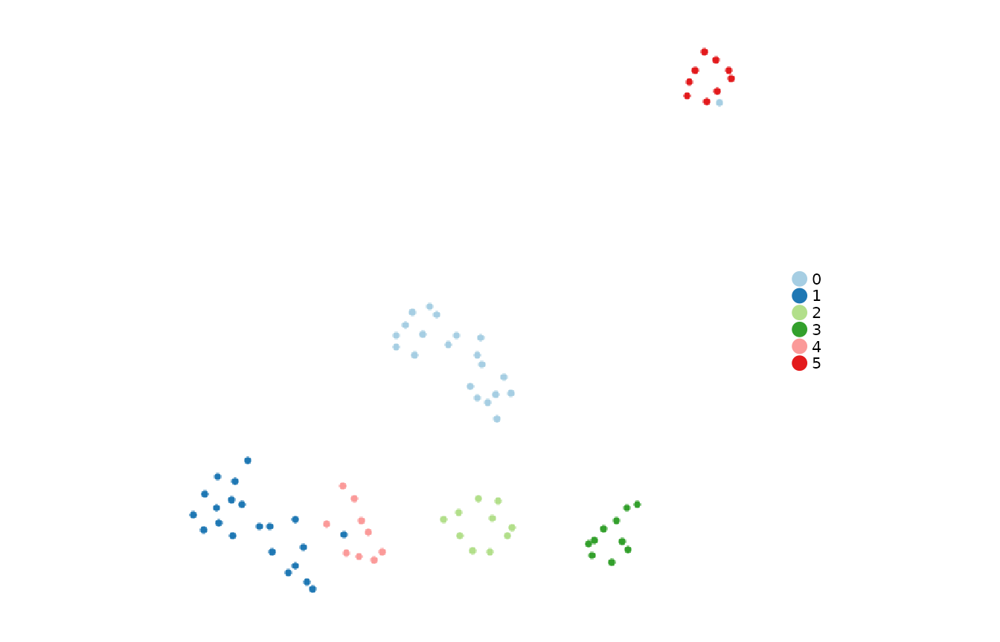

Run this page from top to bottom to create a Seurat object, cluster cells, find markers, score a gene set, and retrieve the saved results. It uses the small PBMC dataset included in SeuratObject, so no data download, Python runtime, API key, or local fixture is needed. The tiny dataset demonstrates usage; it is not suitable for condition-level biological conclusions.
1. Install and load
Run installation once. Shennong is under development; the
documentation tracks GitHub main.
install.packages(c("remotes", "Seurat"))
remotes::install_github("zerostwo/shennong")2. Start from counts
Expression matrices have genes in rows and cells in columns. Cell names must match the row names of any metadata you add. Recreate the example from counts so the steps below do not reuse its precomputed analysis.
counts <- SeuratObject::GetAssayData(pbmc_small, assay = "RNA", layer = "counts")
pbmc <- SeuratObject::CreateSeuratObject(counts = counts, project = "quickstart")
dim(pbmc)
#> [1] 230 80
head(pbmc[[]])
#> orig.ident nCount_RNA nFeature_RNA
#> ATGCCAGAACGACT quickstart 70 47
#> CATGGCCTGTGCAT quickstart 85 52
#> GAACCTGATGAACC quickstart 87 50
#> TGACTGGATTCTCA quickstart 127 56
#> AGTCAGACTGCACA quickstart 173 53
#> TCTGATACACGTGT quickstart 70 48For your own data, replace counts with an imported
matrix. For example,
counts <- sn_read("path/to/filtered_feature_bc_matrix")
reads a 10x directory. For multimodal 10x input, select the
gene-expression matrix from the returned list before creating an RNA
object. See data input and output
for metadata alignment, backed matrices, and file formats.
3. Normalize, reduce dimensions, and cluster
sn_run_cluster() performs normalization,
variable-feature selection, PCA, neighbors, clustering, and UMAP. Set
integration_method = "unintegrated" for a baseline
analysis. Here the feature and dimension counts are deliberately small
because the bundled example is small.
pbmc <- sn_run_cluster(
pbmc,
assay = "RNA", layer = "counts",
normalization_method = "seurat",
integration_method = "unintegrated",
nfeatures = 100, npcs = 10, dims = 1:10,
resolution = 1.2, seed = 717,
verbose = FALSE
)
#> WARN [2026-09-24 00:29:30] Skipping cell cycle scoring because the selected assay has insufficient overlap with human cell-cycle markers (S: 0, G2M: 0).
table(pbmc$seurat_clusters)
#>
#> 0 1 2 3 4 5
#> 21 21 10 10 9 9assay chooses the modality; layer chooses
the expression matrix within it. npcs controls how many PCs
are computed and dims selects those used downstream.
Cluster labels are computational groups, not cell-type annotations.
sn_plot_dim(pbmc, reduction = "umap", group_by = "seurat_clusters")
For multiple batches, first inspect a baseline and the experimental
design. Then add batch_by = "batch" and choose an
integration method. See clustering and
integration for batch-aware examples and parameter
conventions for the distinct roles of batch_by,
group_by, and sample_by.
4. Find markers and select a table
The analysis stores all tested results. The getter selects the rows you want to display. These two steps use separate filters.
pbmc <- sn_find_de(
pbmc, analysis = "markers", group_by = "seurat_clusters",
assay = "RNA", layer = "data", method = "wilcox",
min_pct = 0.1, logfc_threshold = 0,
result_id = "cluster_markers", verbose = FALSE
)
markers <- sn_get_de_result(
pbmc, result_id = "cluster_markers",
direction = "up", top_n = 3, top_scope = "group"
)
head(markers)
#> # A tibble: 6 × 7
#> p_val avg_log2FC pct.1 pct.2 p_val_adj cluster gene
#> <dbl> <dbl> <dbl> <dbl> <dbl> <fct> <chr>
#> 1 0.000000756 10.1 0.381 0 0.000174 0 LILRA3
#> 2 0.00000431 9.40 0.333 0 0.000991 0 VSTM1
#> 3 0.000128 9.33 0.238 0 0.0293 0 IL17RA
#> 4 0.0000000208 13.0 0.476 0 0.00000479 1 GZMH
#> 5 0.000000756 11.5 0.381 0 0.000174 1 AKR1C3
#> 6 0.00346 11.0 0.143 0 0.796 1 S100BThis selects up to three positive markers per
cluster. Add p_adjusted_cutoff = 0.05 and
logfc_threshold = 0.25 to the getter to select significant
effects for a report. Use top_scope = "all" for one top-N
list across the selected groups. A significance filter may return zero
rows on a small dataset; that is a valid result.
5. Score a gene set
A signature is a named list of gene vectors. This example computes the mean normalized expression of an illustrative B-cell marker panel. Scoring a panel does not by itself establish a cell identity.
signatures <- list(B_cell = c("MS4A1", "CD79A", "CD79B"))
pbmc <- sn_score_programs(
pbmc, signatures = signatures, method = "mean",
assay = "RNA", layer = "data", seed = 717,
result_id = "marker_panel"
)
scores <- sn_get_result(pbmc, type = "program_scoring", result_id = "marker_panel")
head(scores$tables$primary)
#> # A tibble: 6 × 5
#> entity program score level group_by
#> <chr> <chr> <dbl> <chr> <chr>
#> 1 ATGCCAGAACGACT B_cell 1.66 cell NA
#> 2 CATGGCCTGTGCAT B_cell 0 cell NA
#> 3 GAACCTGATGAACC B_cell 0 cell NA
#> 4 TGACTGGATTCTCA B_cell 0 cell NA
#> 5 AGTCAGACTGCACA B_cell 0 cell NA
#> 6 TCTGATACACGTGT B_cell 0 cell NA
scores$tables$coverage
#> # A tibble: 1 × 6
#> program n_genes n_matched coverage matched_genes missing_genes
#> <chr> <int> <int> <dbl> <chr> <chr>
#> 1 B_cell 3 3 1 MS4A1;CD79A;CD79B ""Inspect tables$coverage to see which genes were
measured. Missing genes are not negative expression evidence. For
rank-based UCell scores, install UCell and use
method = "ucell". Group summaries require an explicit order
of operations; see group
scoring.
6. Discover, retrieve, and save
sn_list_results(pbmc)
#> # A tibble: 2 × 8
#> collection type result_id analysis method created_at n_rows source
#> <chr> <chr> <chr> <chr> <chr> <chr> <int> <chr>
#> 1 shennong.results de cluster_… de wilcox 2026-09-2… 236 NA
#> 2 shennong.results program_s… marker_p… program… mean 2026-09-2… 80 NA
full_de <- sn_get_result(pbmc, type = "de", result_id = "cluster_markers")
full_de$parameters
#> list()
head(full_de$tables$primary)
#> # A tibble: 6 × 7
#> p_val avg_log2FC pct.1 pct.2 p_val_adj cluster gene
#> <dbl> <dbl> <dbl> <dbl> <dbl> <fct> <chr>
#> 1 2.12e-11 4.47 0.81 0.068 0.00000000488 0 CFD
#> 2 4.94e-11 3.50 0.952 0.254 0.0000000114 0 LST1
#> 3 5.91e-11 3.31 1 0.322 0.0000000136 0 AIF1
#> 4 1.04e-10 4.29 0.81 0.119 0.0000000238 0 SERPINA1
#> 5 1.52e-10 2.59 1 0.22 0.0000000350 0 TYMP
#> 6 1.78e-10 3.69 0.857 0.136 0.0000000409 0 IFITM3sn_list_results() lists stored analyses,
sn_get_result() returns one complete result, and table
getters such as sn_get_de_result() return a data frame.
Always assign the returned object when you want to retain a new
analysis.
saveRDS(pbmc, "pbmc-analysed.rds")
pbmc <- readRDS("pbmc-analysed.rds")
sn_list_results(pbmc)| Next task | Read next |
|---|---|
| Select layers, parameters, result IDs, or overwrite behavior | Parameters and results |
| Test markers or replicated conditions, then enrich pathways | Differential expression and enrichment |
| Filter cells, normalize counts, or correct ambient RNA | Preprocessing and QC |
| Integrate batches and assess the embedding | Clustering and diagnostics |
| Make figures from expression or stored results | Visualization |
| Choose a spatial, bulk, or dynamics workflow | All workflows |